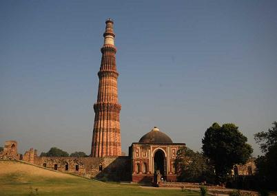
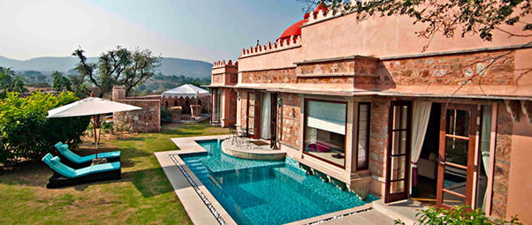

Qutub Minar in Delhi is world heritage site. The tall minaret was constructed in 1192 by Qutab-ud-din Aibak, and later completed by his successor Iltutmish. The soaring conical tower is an exquisite example of Indo-Islamic Afghan architecture.
Qutub Minar Height : 72.5 meteres or 237.8 feet Steps in minar : 379 steps Year Built : 1192 Address : Aurobindo Marg, Mehrauli, New Delhi Built by :Qutab-ud-din Aibak
Bordering the Qutb Minar complex, but overlooked by most of the tourist hordes, the Mehrauli Archaeological Park preserves some of the most atmospheric relics of the second city of Delhi. Scattered around a forest park are the ruins of dozens of tombs, palace buildings and colonial follies. You can reach the park by turning right from the metro station onto Anuvrat Marg and walking around 500m; the entrance is via a small lane on your left, marked by a board showing the park regulations.

India gate situated on the eastern side of Rajpath salutes the soldiers who sacrificed their lives during World War I. The India Gate permits the tourists to retrace the bravado of the Indian soldiers. The monument is now a major tourist spot in Delhi and a common picnic site for tourists and The India Gate reaches up to a height of 42mtrs and stands tall in the heart of the city with an arched structure. It is boasted that the India Gate is similar in structural elegance to the counterpart in Paris. The monument is built with light brown Bharatpur stones. An added memorial- Amar Jawan Jyoti was introduced in 1971 after the Indo-Pak war in the memory of the many deceased Indian soldiers. A flame burns day and night in remembrance of the lost lives.
Tree of Life HOTELS, DELHI 1.8 km
Svelte Hotel & Personal Suites HOTELS, DELHI

Haveli Hauz Khas HOTELS, DELHI